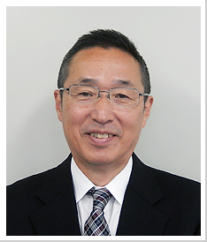

新年のご挨拶

新年、明けましておめでとうございます。会員生協の皆様、行政、議会、友誼団体の皆様、日頃からのご指導・ご鞭撻へ心から感謝するとともに、新春のご挨拶を申し上げます。
埼玉県生協連は、「平和とよりよき生活のために」に立ち返り、「各会員生協の実践を交流する場づくり」「社会への発信」「幅広い連帯の形成」を大切に取り組んでいます。
東日本大震災と東京電力福島第一原子力発電所事故から9年目の年となります。しかし、被災地では復興に向けた取り組みは遅れており、さらに原発事故に対しては、除染作業を進め避難指示解除をおこなうも帰還する人はまだまだ少ない状況です。
埼玉県生協連は、生協内に留まらず、消費者運動を支える役割として「埼玉県消費者団体連絡会」と「適格消費者団体／特定適格消費者団体・埼玉消費者被害をなくす会」の事務局機能を担っています。また、埼玉で活動している協同組合や非営利団体・個人が参加する「埼玉協同・連帯ネットワーク」、被爆者団体などで構成している「平和・市民5団体」と連携し、平和、消費者行政充実、省エネ再生エネ、高齢者福祉などの取り組みで役割を発揮しながら、県内で多様なネットワークを構築していくことを大切にしてまいります。
特にここ数年は、「消費者被害防止サポーター」や「フードバンク」などの取り組みを通して、埼玉県や他団体との連携が強まっています。さらに、日本協同組合連携機構（JCA）の立ち上げに呼応し、SDGs（持続可能な開発目標）への取り組みも含めて、県内での協同組合や他団体との連携を一層強めてまいる所存です。
東日本大震災以降、豪雨・地震・台風などが多発しています。被災地の復興と埼玉県内の被災者・避難者への支援に、県内の生協・協同組合・地域諸団体などの皆さんとともに、情報を共有し、息長く取り組みを継続してまいります。
皆様の今後のご健勝とご活躍を祈念するとともに、引き続き、私どもへのご指導ご鞭撻を賜りますようお願い申し上げ、新春のご挨拶とさせていただきます。
埼玉県生活協同組合連合会
会長理事 岩岡 宏保